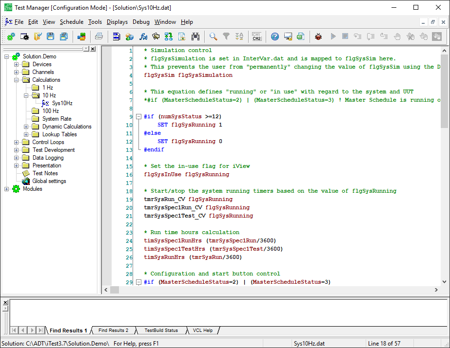
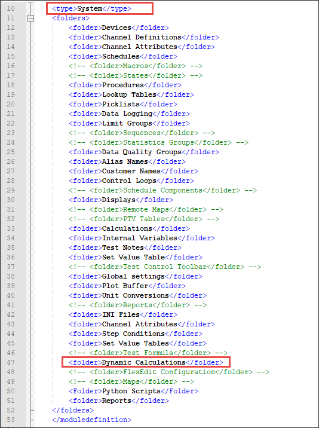
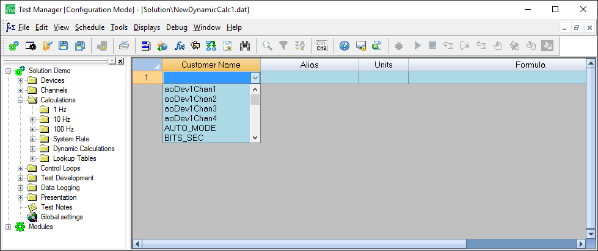
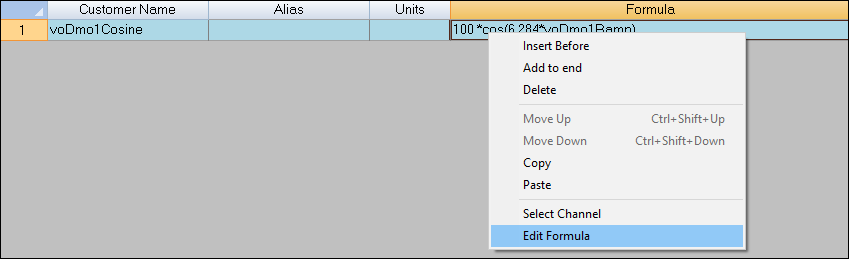
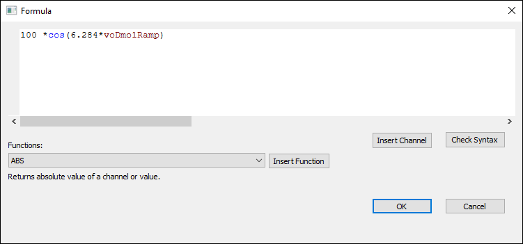
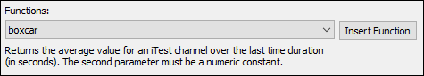
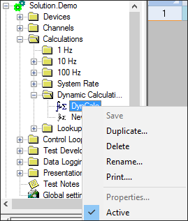
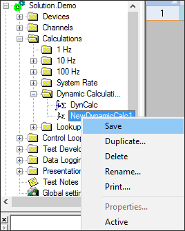

iTest User's Guide
Calculations are a series of periodically calculated formulas. The calculated results are stored as channel values that can be logged, displayed, verified for limits and quality, and more. The following sections describe how to use Test Manager to create and edit calculations. For more information, reference the Calculations documentation.
Continuous calculations begin as soon as iTest is initialized and continue until the system is exited. Calculations are stored in separate files within folders that represent the rate of calculations. The following calculation folders are available, by default:
For the 1000 Hz calculation folder to appear, the Support1kHz powertek.ini setting must be set to TRUE.
By default, iTest calculations are supported at the following rates: 1 Hz, 10 Hz, 100 Hz, or system rate. To support calculations at a rate up to 1000 Hz, the Support1kHz powertek.ini option must be set to TRUE, and it must be running on a dedicated machine with a real-time operating system. A special task executes and enables the scanning of PIDs, logging, and calculations at rates up to 1000 Hz.
Calculations are executed in the following priority:
 |
CAUTION: | Calculations running at 1000 Hz have the potential to slow the system. Calculations that involve strings are CPU intensive and should be calculated at 10 Hz or 1 Hz. |
Calculations use the following format:
<ChannelName> <Formula>
 |
NOTE: | A single line in the Calculations editor cannot exceed 1023 bytes. |
You can create new calculations in Test Manager's tree bar. Calculations are maintained in the Calculations folder.
To create a new calculation, do the following:
To create your own calculations, use the editor and enter an existing channel name, followed by a blank space character, followed by a formula. You may also use the helper bar to drag functions, channel names, and operators into the calculation editor. For more information about VCL functions that can be used in your calculations, use the following reference guides for assistance:
|
NOTE: | The use of #if logic is supported in calculations; however, while loop functionality is not permitted. |
The following image is an example of the calculation editor used to define a series of assignments and logical statements:
10 Hz Calculation Example

Dynamic calculations run independently and asynchronously to the real-time system as they are processed by separate executables. This enables you to perform modifications to the calculation file while it is actively running without affecting the system or causing a full rebuild. Test Manager and SolutionBuilder support the creation of multiple dynamic calculation files, but only ten may be active at a given time. The CalcEngine application executes the dynamic calculations and processes them at system scan rate.
Dynamic calculations support the following channel types:
|
NOTE: | The use of string channels is not supported. |
To use dynamic calculations, the CalcEngine application can be configured to initiate upon startup. To do so, edit the powertek.ini file in the $SUPPORTDIR with the following additions:
CalcEngine Configuration Settings
| Operating System | Description |
| Windows | Add \\calcengine.exe>> to the Preload= entry. |
| INtime | Add\\calcengine.rta>> to the RTxPreload= entry. |
For INtime, the name used is dependent on the system version. For more information, refer to the INtime Extensions documentation to determine which RTA file to use. For INtime >= 4.2, specify the CPU node on which to run (e.g., \\CalcEngine.rta -nNodeA>>). CalcEngine.rta may be (re)started with a mailslot to data_engine (e.g., "CalcEngine Start" or "CalcEngine Start -nNodeA").
If the Dynamic Calculations folder is not present in Test Manager, it must be added to the moduledefinition.xml file located in the $SUPPORTDIR. Open the moduledefinition.xml file, and enter the following line in the System type section:
<folder>Dynamic Calculations</folder>
Adding the Dynamic Calculations Folder

Dynamic Calculations are edited and created in Test Manager. If the Dynamic Calculations folder is not visible, refer to the Adding the Dynamic Calculations Folder section above.
To create a new dynamic calculation, do the following:

You can define your dynamic calculation using the columns: Customer Name, Alias, Units, and Formula.
New Dynamic Calculation File

Dynamic calculations support #if logic embedded into the formula string for an individual calculation. The syntax is as follows:
#if (condition) \ntrue_result\n#endif
or
#if (condition) \ntrue_result\n#else\nfalse_result\n#endif
Where: "\n" delimits the statements
|
CAUTION: | #elseif statements and nested #if/#else statements are not supported. |
The Edit Formula dialog is a feature that allows you to conveniently input formulas into dynamic calculations. To access this dialog, right-click the Formula column in the row you want to edit, then select Edit Formula.
Edit Formula Dialog

The Edit Formula dialog will display:
Edit Formula Dialog

Edit Formula Dialog Buttons
| Button | Description |
| Insert Function | Inserts a function selected from the drop-down menu. Upon selecting a function, a description of that function will display below the menu.  |
| Insert Channel | Launches the Channel Select dialog. |
| Check Syntax | Verifies the formula's syntax. If selected, a pop-up will appear to indicate an error or confirm the syntax has passed. |
To load changes from the dialog to the table, click OK. To exit out of the dialog without saving changes, click Cancel.
To activate a calculation, right-click the Dynamic Calculation file, and select the Active menu option. When iTest is initialized, the active calculation file is automatically compiled and executed.
Activating the Dynamic Calculation File

When dynamic calculations are saved, the formulas and fields are parsed for accuracy prior to saving. An error will cause a message to generate within the output bar or it may display in a separate dialog describing formula errors. These syntax errors prohibit the dynamic calculations from being saved.
To save your dynamic calculation file, right-click the file name and select the Save menu option.
Saving the Dynamic Calculation File

You can change the order that calculations are executed within a calculation rate folder. This enables you to have a finer control over the order that the files are run. Calculations can only be ordered within a specific rate. In other words, you cannot order 10 Hz and 100 Hz calculations.
To modify the calculation order for a specific folder rate, right-click on a folder and select Order Calculations. This opens the Calculation Order dialog, where you can drag and drop the calculation files to reorder when the calculations are executed.
Ordering Calculations
When finished, click OK. Note that the new order is not reflected visually in the list of calculations.
In addition to the manual reordering of your solution’s calculations, module calculations can be controlled by defining the process order value of each module. A lower process order number places the module’s calculations earlier in the calculation loop. By default, new modules have a process order of 2 and the calculations in the system module have an order of 1. Without adjusting these values, the calculations in the base system occur prior to the calculations in the modules.
|
NOTE: | If two modules have the same order, the order by which they are processed is indeterminate. |